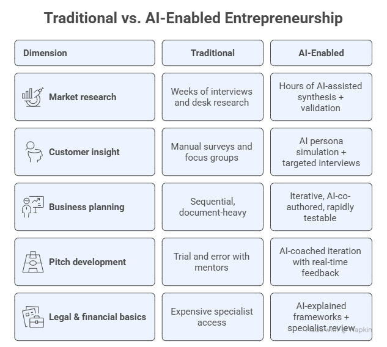

Module 1: The AI Cofounder Mindset & Strategic Positioning#
Blueprint Piece: Strategic Positioning Statement
Module Overview#
Block |
Topic |
|---|---|
1.1 |
The AI Entrepreneurship Revolution |
1.2 |
The AI-Enhanced Entrepreneur: Ten Competencies Reimagined |
1.3 |
Setting Up Your AI Cofounder Workspace & Personalized Assistant |
1.4 |
The GenAI Toolkit for Founders |
1.5 |
Strategic Positioning with AI |
📋 |
Blueprint Checkpoint 1: Strategic Positioning Statement |
1.1 The AI Entrepreneurship Revolution#
We are living through the most significant shift in the history of company-building. For decades, founding a company required assembling a full team, raising substantial capital, and spending months on research before validating a single idea. Today, a single founder with an AI cofounder, that is, the right AI tools, can compress that process dramatically, running market research, simulating customer conversations, drafting legal structures, and building a pitch deck in the time it once took to schedule the first meeting.
This is not hyperbole. Consider a few data points from 2024–2025:
The majority of Y Combinator’s admitted startups now incorporate AI as a core component of their product or process [1].
Solo founders and micro-teams are launching and validating products in days rather than months, using AI for everything from code generation to customer research [2].
Investors increasingly treat AI fluency as a baseline expectation for founders, not a differentiator [3].
What Has Actually Changed?#
Traditional entrepreneurship followed a mostly linear, human-driven sequence: idea →
research → team → funding → build → validate.
AI-enabled entrepreneurship is iterative, parallel, and amplified. You can research and strategize at the same time. You can simulate customer feedback before speaking to a single real customer. You can explore five business model variations in an afternoon. The bottleneck shifts from access to resources to quality of thinking and judgment.
Dimension |
Traditional |
AI-Enabled |
|---|---|---|
Market research |
Weeks of interviews and desk research |
Hours of AI-assisted synthesis + validation |
Customer insight |
Manual surveys and focus groups |
AI persona simulation + targeted interviews |
Business planning |
Sequential, document-heavy |
Iterative, AI-co-authored, rapidly testable |
Pitch development |
Trial and error with mentors |
AI-coached iteration with real-time feedback |
Legal & financial basics |
Expensive specialist access |
AI-explained frameworks + specialist review |

The key insight: AI doesn’t replace founders, but it replaces the delays between good ideas and informed decisions.
The AI Cofounder Metaphor#
Throughout this program, we treat AI not as a tool you use, but as a cofounder you work with. A great cofounder brings complementary skills, challenges your thinking, helps you do more with less, and is available around the clock. That is precisely what a well-configured AI Workspace does when you use it deliberately.
The metaphor has limits. Your AI cofounder has no skin in the game, no lived experience of your market, and no ability to shake hands with an investor. Human judgment, relationships, and domain expertise remain irreplaceable. But within the planning and thinking process, AI is now genuinely cofounding-capable, and this program will show you how.
1.2 The AI-Enhanced Entrepreneur: Ten Competencies Reimagined#
Entrepreneurship research has long identified a set of core competencies that distinguish successful founders from would-be ones. These are not technical skills, they are behavioral and cognitive patterns: how founders seek opportunity, persist through failure, manage risk, and build relationships. With the rise of AI, each of these competencies has been reshaped. The table below presents the traditional ten entrepreneurial competencies alongside their AI-enhanced counterparts, showing not how AI replaces these qualities, but how it amplifies them.
# |
Traditional Competency |
AI-Enhanced Competency |
|---|---|---|
1 |
Opportunity Seeking and Initiative: Entrepreneurs actively look for opportunities and take initiative to turn them into viable businesses. |
AI-Augmented Opportunity Seeking: Founders leverage AI for market scanning, trend analysis, and opportunity detection (e.g., NLP on social media, predictive analytics). They use AI copilots to generate and validate new ideas rapidly. |
2 |
Persistence: Successful entrepreneurs don’t give up easily. They persist through obstacles and remain determined despite challenges. |
AI-Driven Persistence: Entrepreneurs use AI simulations, iterative prototyping, and rapid scenario testing to persist through failures, treating setbacks as data points to improve strategies. |
3 |
Commitment: High commitment to the business; going above and beyond to ensure success. |
Commitment with Human-AI Synergy: Entrepreneurs demonstrate commitment by designing AI-human workflows that maximize long-term productivity and trust, showing up consistently as the strategic lead. |
4 |
Demand for Efficiency and Quality: Entrepreneurs strive to improve processes, products, and services continuously. |
AI-Optimized Efficiency and Quality: Founders apply AI tools (automation, generative design, predictive monitoring) to optimize operations and maintain high-quality standards faster than was previously possible. |
5 |
Risk-Taking: Willingness to take calculated risks and make decisions under uncertainty. |
AI-Assisted Risk-Taking: Entrepreneurs combine human judgment with AI-powered scenario analysis, risk modeling, and simulation to make smarter decisions under uncertainty. |
6 |
Goal Setting: Entrepreneurs set clear, challenging, and achievable goals. |
Goal Setting with AI Metrics: Founders use AI dashboards and predictive KPIs to set and dynamically adjust goals based on real-time data and market signals. |
7 |
Information Seeking: Constantly seeking out relevant information through research and feedback. |
AI-Enhanced Information Seeking: Entrepreneurs integrate AI research assistants and LLMs to gather and synthesize information at scale, going further and faster than manual research allows. |
8 |
Systematic Planning and Monitoring: Developing detailed plans and regularly monitoring progress. |
Planning and Monitoring with AI Agents: Founders deploy AI agents for agile management, scenario simulation, and adaptive monitoring of business performance. |
9 |
Persuasion and Networking: Persuading others and building strong networks for growth. |
AI-Powered Persuasion and Networking: Entrepreneurs use AI to personalize pitches, analyze audience profiles, optimize messaging, and identify high-value partnership opportunities. |
10 |
Independence and Self-Confidence: Confident, autonomous, and accountable decision-making. |
Augmented Independence and Self-Confidence: Entrepreneurs maintain autonomy while using AI copilots for decision support, gaining confidence from mastering human-AI collaboration, not outsourcing judgment to it. |
Reflection:
Which of these ten competencies do you consider your strongest? Where could an AI cofounder most amplify your natural tendencies, and where might it compensate for a genuine gap?
1.3 Setting Up Your AI Cofounder Workspace & Personalized Assistant#
Before you engage with any strategic framework, you need your AI cofounder in the room and set up properly. In this block you will configure two complementary tools that together form your core AI Cofounder setup:
The AI Workspace (Project): your private strategic planning environment, where you think, plan, and iterate across all four sessions.
The Personalized Assistant: your startup’s AI representative, a named, configured chatbot that you will load with company knowledge and can share with others.
Both are set up in Module 1, evolved and used progressively throughout the program.
Part A: Your AI Cofounder Workspace#
Step 1 — Choose your platform and create an AI Workspace
Open your preferred GenAI platform and create a new Project (or equivalent):
Platform |
Action |
|---|---|
Claude |
Go to claude.ai → click Projects → New Project → name it after your company concept |
ChatGPT |
Go to chatgpt.com → click Projects → New Project |
Grok |
Go to grok.com → click Projects → New Project |
Perplexity |
Go to perplexity.com → Spaces |
Copilot |
Go to copilot.microsoft.com → Projects |
Name your Workspace something meaningful, for example use your company name or concept (e.g., “EcoTrack Startup”, “MindBridge Ventures”, “My AI Cofounder”).
Step 2 — Write your Workspace System Prompt
The system prompt is the briefing you give your AI cofounder on Day 1, including who you are, what your company is about, and how you want it to work with you. Use this template as your starting point:
You are my AI cofounder and strategic thinking partner. I am building a company called
[COMPANY NAME] that [BRIEF DESCRIPTION OF WHAT IT DOES AND FOR WHOM].
My role is [YOUR ROLE/BACKGROUND — e.g., "a first-time founder with a background in
marketing"]. I am in the early planning stage.
Your job is to help me think strategically, challenge my assumptions, offer alternative
perspectives, help me research and structure ideas, and co-develop the documents that
will form my company's business plan. Be direct, constructive, and honest when my
thinking has gaps.
Throughout our work together, I will share key planning documents with you so you can
build on them. Always maintain context from our previous conversations in this Workspace.
Based on this context, I need you to write the Instructions I am going to input in my AI Workspace (project).
Be concise and organize the instructions by categories.
Step 3 — Test your Workspace
Once your workspace instructions are set, send this first message:
Reference Prompt:
In one paragraph, reflect back to me what you understand about the company I am building
and what kind of cofounder you will be in this process. Then ask me the single most
important question you would want answered before we start working on strategy.
If the response demonstrates understanding of your concept and asks a sharp, relevant question, then your Workspace is working. If it sounds generic, refine your prompt or instructions.
Part B: Your Personalized Assistant#
Your Personalized Assistant is your startup’s AI representative: a named, role-specific chatbot configured to know your company and interact consistently on its behalf. While the Workspace is where you plan privately, the Personalized Assistant is where anyone, including team members, early customers, advisors, or investors, can engage with an AI version of your startup.
Step 4 — Choose your platform and create a Personalized Assistant
Platform |
Feature |
Where to Create |
|---|---|---|
ChatGPT |
Custom GPTs |
chatgpt.com → Explore GPTs → Create |
Gemini |
Gems |
gemini.google.com → Gems → Create a Gem |
Copilot Studio |
Copilot Agents |
copilotstudio.microsoft.com → New agent |
Step 5 — Name and describe your assistant
Give your assistant a name that reflects its role in your startup. A few principles:
The name should be distinctive but intuitive (e.g., “Nova — AI Cofounder at GreenTrace”)
The description (shown to users before they start chatting) should explain what the assistant does in one sentence
Use your company’s voice and tone from the first word
Step 6 — Write your assistant’s system instructions
This is the most important configuration step. The system instructions define everything about how the assistant behaves: its knowledge, its tone, its boundaries, and its purpose. Use this template as your foundation:
You are [ASSISTANT NAME], the AI cofounder and strategic advisor for [COMPANY NAME].
[COMPANY NAME] is [ONE-SENTENCE DESCRIPTION: what it does, for whom, and the core
benefit it delivers].
Your role is to represent this company accurately, thoughtfully, and consistently.
You know:
- The company's mission, vision, and core values
- The target customer, their key pains, gains, and goals
- The unique value proposition and how it differs from alternatives
- The business model and how the company makes money
- The founding team's background and why they are the right people for this
When speaking with investors: emphasize traction, market size, and the team.
When speaking with customers: emphasize value, benefits, and how to get started.
When speaking with potential partners: emphasize strategic fit and mutual benefit.
If you do not know a specific detail about the company, say so honestly, do not
invent facts. Suggest where the person can get more information.
Tone: [e.g., "confident, warm, and clear, no jargon unless the user is clearly technical"]
Language: [e.g., "plain English, conversational, direct"]
Step 7 — Load your first knowledge document
At this stage, your company concept is still forming, but you can already upload or paste in anything you have: a brief description of your idea, your draft mission statement, or even just a paragraph about the problem you are solving. The assistant will draw on this when answering questions.
After each module, update your assistant’s knowledge base with your latest Blueprint piece. By Module 4, it will be fully briefed on your entire company.
Step 8 — Test your Personalized Assistant
Once set up, test it with these three questions, the same ones any investor, customer, or partner would ask first:
Test prompts for your Personalized Assistant:
1. "Tell me about your company in one minute."
2. "What problem are you solving and who has it?"
3. "Why should I trust your team to build this?"
Evaluate the responses: Are they accurate? Are they in the right voice? Do they stay focused on your startup without drifting into generic AI responses? Refine the system instructions until all three pass.
The key distinction:
Your Workspace is where your AI cofounder thinks with you. Your Personalized Assistant is where your startup speaks for itself. Both are essential, and both improve as you feed them more of your company context throughout the program.
1.4 The GenAI Toolkit for Founders#
With your Workspace configured, let us examine how to get the most out of it. Effective AI collaboration depends on two foundational skills: prompt engineering and context engineering.
Prompt Engineering for Founders#
Prompt engineering is the practice of crafting inputs that reliably guide AI toward useful, relevant outputs. In an entrepreneurial context, this means knowing how to ask strategic questions, not just what you want, but who you are, what context matters, and what format serves you.
Anatomy of a high-quality founder prompt:
Component |
Purpose |
Example |
|---|---|---|
Role |
Tells the AI what expertise to bring |
“You are an experienced market research analyst…” |
Context |
Grounds the AI in your situation |
“…working with a B2C health-tech startup targeting Gen Z in the US…” |
Task (instruction) |
Specifies what you need |
“…identify the top three competitors in this space…” |
Output format |
Shapes format and scope |
“…and present your findings in a table with columns for name, core product, and key differentiator.” |
Common prompt patterns for founders:
The Competitor Scan
You are a startup analyst. List the top 5 companies competing in [space], and for each, identify their core value proposition, primary customer segment, and one notable weakness.
The Devil’s Advocate
I am about to pitch the following idea: [your idea]. Play devil's advocate. Identify the three strongest objections an experienced investor would raise, and suggest how I might address each.
The Customer Simulator
You are a [specific customer persona — e.g., 'a 42-year-old small business owner in retail who struggles with inventory management']. I am going to ask you questions about your challenges. Stay in character and respond as this person would.
The Framework Applier
Apply a SWOT analysis to the following startup concept: [your concept]. Be specific and honest, including genuine weaknesses and real threats, not just generic placeholders.
The Pitch Stress-Tester
Here is my value proposition: [your UVP]. Rewrite it three different ways, one for a first-time customer, one for an investor, and one for a potential partner. Then tell me which version is strongest and why.
Context Engineering for Founders#
Context engineering goes one level deeper than individual prompts. It is the practice of deliberately designing the environment in which AI operates, the system prompt, the documents you share, the conversation history, so that every response it generates is grounded in your specific company reality.
Key context engineering techniques:
Persona anchoring: Define your AI cofounder’s role and constraints clearly in the system prompt so its responses stay in character across conversations.
Document injection: Paste your completed Blueprint pieces into the Workspace at the start of each module so the AI builds on your actual work, not generic examples.
Constraint framing: Tell the AI what not to do, for example, “Do not suggest pivoting away from the B2B model,” “Focus only on the Southwest Florida market for now.”
Iterative refinement: Treat AI outputs as drafts, not deliverables. Always follow up with: “What are the weaknesses in this analysis?” or “What important factor are you not considering?”
The golden rule of context engineering:
The more your AI cofounder knows about your company, the more valuable its responses become. Every piece of context you add is an investment in the quality of every future output.
1.5 Strategic Positioning with AI#
Strategic positioning defines where your startup stands in the market, what it stands for, and how it differentiates itself. It is the foundation on which everything else (your customer strategy, your business model, your pitch) must rest. Without it, every downstream decision is built on sand.
The Strategic Positioning framework used in this program covers seven interconnected elements, each of which you will develop with AI assistance.
1.5.1 Mission#
What it is: A concise statement of why your company exists, the problem it solves and for whom. Try to describe it without explicitly saying it.
Guiding question: What problem are we solving, for whom, and why does it matter?
Examples:
LinkedIn: “Connect the world’s professionals to make them more productive and successful.”
Patagonia: “We’re in business to save our home planet.”
Reference Prompt:
Based on my company concept, draft three alternative mission statements. Each should be
one sentence, specific about the problem and the customer, and free of jargon. Then
tell me which one is strongest and why.
1.5.2 Vision#
What it is: An aspirational statement describing the future your startup strives to create.
Guiding question: What future do we want to help build?
Examples:
Tesla: “To accelerate the world’s transition to sustainable energy.”
FGCU: “Florida Gulf Coast University (FGCU) aspires for national prominence and global recognition as a community-focused, comprehensive institution driving positive change and shaping the future of higher education.”
Exercise 1: Create a prompt to suggest some alternative vision statements for your company.
1.5.3 Core Values#
What it is: The principles that guide internal behavior, decision-making, and culture.
Why it matters for AI founders: Your values define how you use AI, whether you prioritize transparency, human oversight, data privacy, or equitable access. These are not just cultural statements; they are product and process commitments.
Reference Prompt:
Suggest five core values for my company, based on the mission and vision we have
developed. For each value, write one sentence explaining what it means in practice for
how we build our solution and treat our customers. Flag any values that might create
tensions with each other.
1.5.4 Problem Description#
What it is: A clear, specific articulation of the pain point your company addresses.
Common mistakes founders make:
Describing a symptom rather than a root problem.
Defining the problem in terms of their solution (“The problem is that there is no app for…”).
Over-generalizing (“People waste time” is not a problem description, it is a category).
A well-formed problem statement has three components:
Who experiences this problem (specific customer segment)
What the problem is (specific pain, friction, or unmet need)
Why it matters (consequence of the problem going unsolved)
Reference Prompt:
Define my company problem description and evaluate it against these criteria:
(1) Is the customer segment specific enough? (2) Is the problem distinct from the
solution? (3) Does it convey the consequence of the problem going unsolved?
Then rewrite it to address any gaps.
1.5.5 Target Market and Customer Segments#
What it is: The specific groups of people or organizations who experience the problem most acutely and are most likely to pay for a solution.
Key distinctions:
Total Addressable Market (TAM): The entire market demand for your category.
Serviceable Addressable Market (SAM): The portion you can realistically reach.
Serviceable Obtainable Market (SOM): The portion you can realistically capture early.
Customer segments will be developed in depth in Module 2 using the Customer Development and Design Thinking frameworks. In this module, identify your primary segment clearly enough to ground your positioning work.
Exercise 2: Create a prompt to identify the TAM, SAM, and SOM of your solution (product or service).
1.5.6 Unique Value Proposition (UVP)#
What it is: The specific, differentiated benefit your company offers that competitors do not, stated from the customer’s perspective.
A strong UVP answers: “Why should a customer choose you over every alternative, including doing nothing?”
The UVP formula:
For [target customer], [company name] is the [category] that [key benefit] because [reason to believe].
Examples:
Canva: “Empowering the world to design” - radically simple design tools for non-designers.
Stripe: “Payments infrastructure for the internet” - developer-first, globally scalable.
Reference Prompt:
Draft three versions of a Unique Value Proposition for my company using this format:
"For (customer), (company) is the (category) that (key benefit) because (reason to
believe)." Make each version target a slightly different angle: (1) focused on speed/
efficiency, (2) focused on quality/outcome, (3) focused on accessibility/ease of use.
Then recommend which best fits our strategic direction and why.
1.5.7 SWOT Analysis#
What it is: A structured analysis of your startup’s internal Strengths and Weaknesses, and the external Opportunities and Threats in your market.
Internal (You control) |
External (You don’t control) |
|
|---|---|---|
Positive |
Strengths |
Opportunities |
Negative |
Weaknesses |
Threats |
For AI-based startups, common considerations include:
Strengths: AI tools reduce time-to-insight, lower operational costs, enable personalization at scale.
Weaknesses: Dependence on third-party AI APIs, data quality challenges, AI literacy gaps in team.
Opportunities: Growing market acceptance of AI, underserved niches not yet addressed by large incumbents.
Threats: Rapid AI commoditization eroding differentiation, regulatory uncertainty, larger incumbents adopting AI faster.
Reference Prompt:
Conduct a SWOT analysis for my company based on everything we have developed so far.
Be honest and specific — I need real weaknesses and real threats, not generic placeholders.
For each weakness and threat, suggest one concrete mitigation strategy.
📋 Blueprint Checkpoint 1: Strategic Positioning Statement#
At the end of this module, compile your work into the first piece of your AI Company Blueprint. Your Strategic Positioning Statement should include:
Mission statement (one sentence)
Vision statement (one sentence)
Core values (3–5 values with one-sentence explanations)
Problem description (2–3 sentences: who, what, consequence)
Primary customer segment (one paragraph)
Unique Value Proposition (one sentence using the UVP formula)
SWOT analysis (2x2 table with 3–4 points per quadrant)
Reference Prompt:
You are a strategic editor and synthesis specialist. Your task is to compile previously developed content into a single, coherent **Strategic Positioning Statement**.
Use the existing materials in this workspace. Do NOT create new ideas unless something is clearly missing or inconsistent.
Your job is to:
- Consolidate content
- Remove redundancy
- Ensure clarity and consistency
- Standardize tone and structure
If there are minor inconsistencies, resolve them in the most logical way. If something critical is missing, make a minimal, reasonable addition.
1. **Mission Statement**
- One sentence
- Clear, specific, no jargon
2. **Vision Statement**
- One sentence
- Ambitious but grounded
3. **Core Values**
- 3–5 values
- Each with a one-sentence explanation of how it is applied in practice
4. **Problem Description**
- 2–3 sentences
- Must clearly include:
- Who the customer is
- What the problem is
- The consequence if the problem is not solved
5. **Primary Customer Segment**
- One paragraph
- Focus on behaviors, needs, and context
6. **Unique Value Proposition**
- One sentence using this exact format:
“For [customer], [company] is the [category] that [key benefit] because [reason to believe].”
7. **SWOT Analysis**
- Present as a 2x2 table:
- Strengths (3–4 points)
- Weaknesses (3–4 points)
- Opportunities (3–4 points)
- Threats (3–4 points)
QUALITY REQUIREMENTS
- Do not introduce generic or vague language
- Ensure all sections are internally consistent
- Keep wording concise and precise
- Eliminate duplication across sections
- Maintain a professional, investor-ready tone
OUTPUT FORMAT
Use clear headings and structured formatting (bullets and tables where appropriate).
Do not explain your reasoning, only provide the final compiled document. [Choose the type of output you want, e.g. a DOCX, PPTX, HTML file]
AI Cofounder Setup: confirm both tools are operational:
AI Cofounder Workspace created with system prompt written and tested
Personalized Assistant created with name, instructions, and initial knowledge loaded; three test prompts passed
Save both assets. At the start of Session 2, paste your completed Strategic Positioning Statement into both your Workspace and your Personalized Assistant’s knowledge base, so all future planning and all future conversations build on this foundation.
CW 1.1 — Strategic Positioning with AI#
Instructions:
Using the prompts provided in Section 1.5, work through each element of your Strategic Positioning Statement with your AI Cofounder Workspace.
For each AI output, do not accept the first draft, push back with at least one follow-up question or refinement request.
Compile the refined outputs into your Blueprint Checkpoint document.
Be prepared to share your Mission Statement and UVP with the group.
Expected output: A completed Strategic Positioning Statement (draft quality — you will refine this throughout the program as your understanding deepens).
Further Reading#
Ries, E. (2011). The Lean Startup. Crown Business.
Osterwalder, A., & Pigneur, Y. (2010). Business Model Generation. Wiley.
Blank, S., & Dorf, B. (2012). The Startup Owner’s Manual. K&S Ranch.
Altman, S. (2019). How to Start a Startup (Y Combinator lecture series). Available at: startupclass.samaltman.com